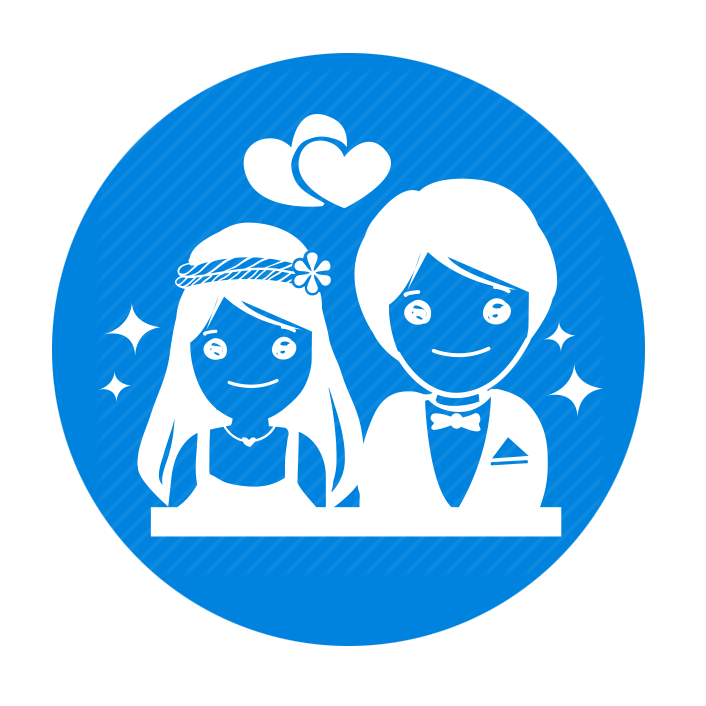

<!--
  Generated template for the CelebrationPage page.

  See http://ionicframework.com/docs/components/#navigation for more info on
  Ionic pages and navigation.
-->
<ion-header>
  <ion-toolbar>
    <ion-buttons slot="start">
      <ion-back-button defaultHref="/" icon="arrow-back"></ion-back-button>
    </ion-buttons>
    <ion-title>Celebration</ion-title>
  </ion-toolbar>
</ion-header>

<ion-content >
  <ion-grid>
    <ion-row text-center>

      <ion-col size="6" (click)="open_root('birthday')">
        <div center class="mybox2">
            
            <br>

          <span style=" font-size: 100%;">Birthdays</span>
          <ion-button shape="round" size="small" class="notif_icon">{{birthday_no||0}}</ion-button>
        </div>
      </ion-col>
      <ion-col size="6" (click)="open_root('aniversary')">
        <div center class="mybox2">
          
          <br>
          <span style="  font-size: 100%">Anniversary</span>
          <ion-button shape="round" size="small" class="notif_icon">{{anniversary_no||0}}</ion-button>
        </div>
      </ion-col>
      <ion-col size="6" (click)="open_wishes_page('send-wishes','wishes')">
        <div center class="mybox2">
            
            <br>

          <span style=" font-size: 100%;">Wishes</span>
          <!-- <ion-button shape="round" size="small" class="notif_icon">{{birthday_no||0}}</shape="round" size="small"> -->
        </div>
      </ion-col>


    </ion-row>
  </ion-grid>
</ion-content>
